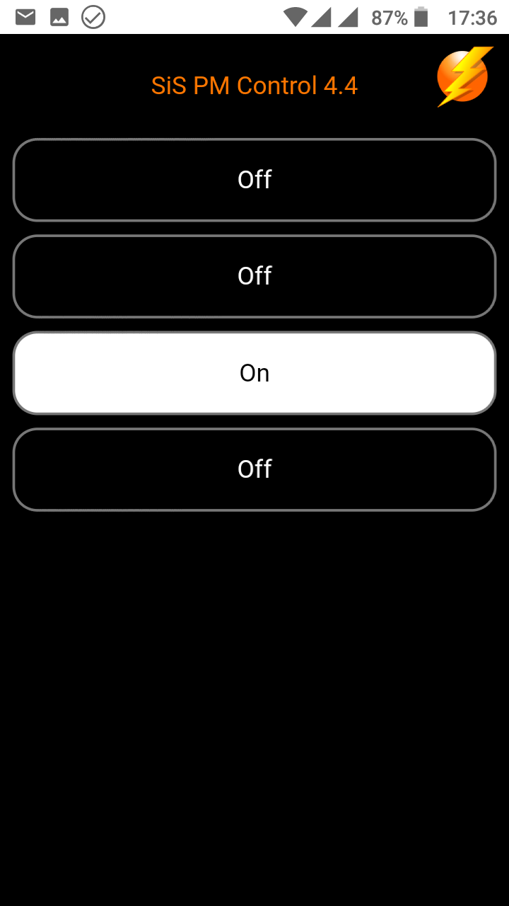

SiS-PM Control for Linux
SiS-PM Control for Linux
Overview
SIS-PM Control for Linux (sispmctl) is an application for managing USB controlled powerstrips produced by GEMBIRD LTD. Newer devices are sold under the Energenie brand. The following devices are supported:
- Gembird MSIS-PM
- Gembird Silver Shield SIS-PM (aka Revolt Intelliplug)
- Gembird Silver Shield SIS-PMS
- Energenie EG-PM
- Energenie EG-PMS
- Energenie EG-PM2
- Energenie EG-PMS2
The software is licensed under The GNU General Public License (GPL) Version 2. This excludes any warranty but gives you the right to redistribute the software.
Identifying devices
The devices can be identified by their USB vendor and product IDS using the lsb command. Here is an example:
$ lsusb Bus 001 Device 007: ID 04b4:fd13 Cypress Semiconductor Corp. Energenie EG-PMS
Devices with the following vendor and product IDs are currently supported.
| Name | Vendor ID, Product ID | Number of Sockets |
|---|---|---|
| Gembird MSIS-PM | 04b4:fd10 | 1 |
| Gembird SIS-PM | 04b4:fd11 | 4 |
| Gembird MSIS-PM | 04b4:fd12 | 1 |
| Gembird SIS-PMS, Energenie EG-PMS | 04b4:fd13 | 4 |
| Energenie EG-PMS2 | 04b4:fd15 | 4 |
Supported Operating Systems
Generally all POSIX compatible operating systems with support of libusb should work, e.g.
- Debian - package sispmctl
- Gentoo Linux - package sys-power/sispmctl
- openSUSE - community packages are available
- OpenWRT - package utils/sispmctl
- Ubuntu - package sispmctl
There have been reports that siscpmctl was successfully compiled and worked under:
- Solaris 10
- MacOS X 10.4 and MacOS X 10.5
Sispmctl is mostly processor architecture agnostic. It has been reported to run on
- x86
- ARM
- MIPS
- PowerPC
- RISC-V
Download and Installation
Many Linux distribution package sispmctl. E.g on Debian and Ubuntu you can install sispmctl usingsudo apt-get update sudo apt-get install sispmctlSispmctl is also available as snap. If you have the snapd daemon installed, you can install the snap with
sudo snap install sispmctlIf you want to use the most current code download the source from Sourceforge and build it yourself: Either download a release tarball sispm_ctl-XX.tar.gz or clone the git repository:
git clone https://git.code.sf.net/p/sispmctl/git sispmctlThen build with
./autogen.sh # only needed after checkout of the Git repository ./configure make sudo make install sudo ldconfigYou need libusb-0.15 or newer installed on your system.
Usage
The sispmctl utility is called from the command line. The following documentation is an excerpt from the man-page of sispmctl (included in distribution):
SYNOPSIS
- sispmctl -s
- sispmctl [ -q ] [ -n ] [ -d 0... ] [ -D ... ] -b <on|off>
- sispmctl [ -q ] [ -n ] [ -d 0... ] [ -D ... ] < -o | -f | -t | -g | -m > <1..4|all>
- sispmctl [ -q ] [ -n ] [ -d 0... ] [ -D ... ] < -a | -A > <1..4|all> [ --Aat '...' ] [ --Aafter ... ] [ --Ado <on|off> ] ... [ --Aloop ... ]
- sispmctl [ -d 0... ] [ -D ... ] [ -i <ip>] [ -p <#port> ] [ -u <path> ] -l
- -h print usage information
- -s scan for supported GEMBIRD devices
- -l daemonize and start listening as a simple http webserver (default port: 2638)
- -L start listening as a simple http webserver without daemonizing
- -p IP network port (default: 2638) for listener. There is no authentication implemented yet.
- -u give the directory path where pages lie, that are served (default: /usr/local/share/doc/sispmctl/skin. The Web path component is completely ignored for security reasons.
- -b switch the buzzer on and off
- -o switch the given outlet(s) to "ON"
- -f switch the given outlet(s) to "OFF"
- -t toggle the state of the given outlet(s)
- -g show the status of the given outlet(s)
- -m get power supply status for the given outlet(s)
- -d Use not the first but the given device in the sequence of detected devices, starting with "0" for the first device (see scan option)
- -D Same as -d, but choose by serial number (see scan option)
- -U Same as -d, but choose by USB Bus:Device the device is connected to (e.g. 001:003)
- -n do not print "ON" and "OFF", but "1" and "0" instead
- -q do neither print explanations nor disclaimers except it is requested
- -a get schedule for given outlet
- -A set schedule for given outlet
- --Aat date - sets an event time as a date '%Y-%m-%d %H:%M' in the current local time zone (not considering day light saving time switches)
- --Aafter N - sets an event time as N minutes after the previous one
- --Ado <on|off> - sets the current event's action
- --Aloop N - loops to 1st event's action after N minutes
- -v print version and copyright
WEB INTERFACE
{kind=link}
The sispmctl program provides a web interface when started with the -l option. No additional http server is needed. Each selected usb device is blocked by pmctl while running.
After installation, the first of three web-interfaces is selected. The default location of the HTML files is /usr/local/httpd/sispm_ctl/doc which is a symbolic link to /usr/local/httpd/sispm_ctl/skin1.
The http capabilities of sispmctl are limited. Technically speaking, only the first line of each http request is parsed. The terminating path component, i.e. file name, is looked up in the repository directory. If present the file is parsed and in absence of control sequences sent as is. The files must include the http header portion.
Control sequences start and end with double dollar `$$'. They consist of a command portion separated by a question mark `?' from alternative outputs which are separated by the first colon `:'. The command portion is a token followed by an embraced number that references the outlet, e.g. $$command(1)?positive:negative$$ while command is one of status, toggle, off , on . It is strongly recommended to avoid the on/off/toggle commands in pages that may be reloaded. Best is to redirect to other pages that only include status requests.
EXAMPLES
Switch off the first outlet of the first SiS-PM and the third outlet of the second SiS-PM:
$ sispmctl -f 1 -d 1 -f 3
Print the status of the forth outlet as zero or one:
$ sispmctl -nqg 4
Run pmctl on the second device as a web-server:
$ sispmctl -d 1 -l
You can connect to it from the same machine by pointing to http://localhost:2638 with your webbrowser
Permissions
Per default, only root is allowed to use devices directly, therefore the SiS-PM also only works as root.
To allow group sispmctl access create file /lib/udev/rules.d/60-sispmctl.rules with the following content
SUBSYSTEM=="usb", ATTR{idVendor}=="04b4", ATTR{idProduct}=="fd10", GROUP="sispmctl", MODE="660"
SUBSYSTEM=="usb", ATTR{idVendor}=="04b4", ATTR{idProduct}=="fd11", GROUP="sispmctl", MODE="660"
SUBSYSTEM=="usb", ATTR{idVendor}=="04b4", ATTR{idProduct}=="fd12", GROUP="sispmctl", MODE="660"
SUBSYSTEM=="usb", ATTR{idVendor}=="04b4", ATTR{idProduct}=="fd13", GROUP="sispmctl", MODE="660"
SUBSYSTEM=="usb", ATTR{idVendor}=="04b4", ATTR{idProduct}=="fd15", GROUP="sispmctl", MODE="660"
Then reload the udev rules with
udevadm control --reload-rules